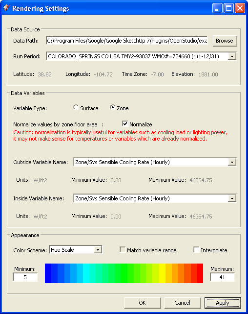

|
|
View Simulation Results
Load data from ESO file
- Report data from EnergyPlus simulation is available in the ESO output file if it was requested in the input file simulated using
'Output:Variable' objects. To see a full list of variables available for reporting in a given simulation make sure to include the object
'Output:VariableDictionary,IDF;' in your input file. This will cause EnergyPlus to generate a Report Data Dictionary (RDD) file listing
reports that can be requested if desired.
- Once an input file has been simulated and ESO file generated the user can load the ESO file into OpenStudio. The IDF file related to
the simulation should be open so results can be related back to input geometry.
- Because the ESO file can be fairly slow to parse, OpenStudio can create a '*.eso.cache' file (set this option in Plugins->OpenStudio->Preferences)
after loading the ESO file to speed up loading on subsequent sessions. The cached file will be refreshed when it is out of date compared to the ESO file.
- The file OpenStudio/examples/GeometryTest.idf is included with pre-run EnergyPlus results for use in this tutorial.
Select Data for Visualization
- Once the ESO file is loaded a list of available run periods (sizing and weather file periods reported in the simulation) and available variables
are populated for the user to choose from.
(Credit: David Goldwasser / NREL)
Rendering Settings dialog box
- OpenStudio can display results related to either surfaces (e.g. Surface Temperature) or Zones (e.g. Mean Air Temperature). When reporting surface
variables the user can display results separately for the inside and outside surfaces.
(Credit: David Goldwasser / NREL)
list of surface variables available
(Credit: David Goldwasser / NREL)
list of zone variables available
- OpenStudio cannot currently display data at the HVAC Timestep reporting frequency.
- The user can choose to display data either in absolute units from the ESO, or after normalizing by surface area for surface variables or Zone floor area for Zone level variables. Normalizing data is helpful for some variable types like Lighting Power, so that large zones do not
appear to have very different properties than smaller zones. However, normalization does not make sense for other variables such as Surface Temperature.
- Both of the following images show the Sensible Cooling Rate at 4:16pm on June 21st. The top image is not normalized by zone, while the second one is. On the top image the large zone in the middle, "DORM ROOMS AND COMMON AREAS", had the second highest Sensible Cooling rate of the five zones at approximately 35,000W. This doesn't mean it is less efficient that than the three zones that show up as blue. It means it is larger. It is hard to tell in this view if it is more or less efficient, because you don't know the relative size of the zones.
- The second image has been normalized to adjust for the size of the zone. You can now see that per square foot, the "DORM ROOMS AND COMMON AERAS" zone at 7.3 W/ft2 vs. approximately 10-12 W/ft2 for the three blue wings.
(Credit: David Goldwasser / NREL)
Zone/Sys Sensible Cooling Rate at 4:16pm on 6/21
(Credit: David Goldwasser / NREL)
Normalized Zone/Sys Sensible Cooling Rate at 4:16pm on 6/21
- The user can choose a minimum and maximum value for the color scale used to visualize report variables. If visualizing report variables in
absolute units the user can automatically set the range using the minimum and maximum values of each variable. This option is not available
if normalizing the report variable by surface or floor area, in that case the user must set the range by hand. It may help to apply the normalization
and then use the Data Tool to check values by hand in order to set this range.
- The dialog box below was used to create the rendered view above. The minimum and maximum values were changed from (0 to 46,000) to (5 to 41).

(Credit: David Goldwasser / NREL)
Viewing the Data
- Once you have selected the data and run period for visualization, press "Apply" or "OK" to save your settings.
- The choose the "Render by Data Value" tool to visualize the data on your input file geometry. Time for the visualization
is controlled using the Shadow Settings dialog which can be accessed through Window->Shadows. This dialog allows you to
choose the date and time (in standard time only, does not account for Daylight Savings) to show results for. Note that
no data will be shown (all white surfaces) if you are currently looking at a date and time without data for the selected
run period, for example if you are looking at a design day run period but at a time and date different than the selected
design day.
(Credit: David Goldwasser / NREL)
Surface Ext Solar Incident at 8:36am on 5/12

(Credit: David Goldwasser / NREL)
Surface Ext Solar Incident at 1:15pm on 5/12

(Credit: David Goldwasser / NREL)
Daylighting Illum at Ref Point 1 at 3:08pm on 5/12 (Zone Variable)
- The color scale tool may be used to generate a color scale for reference. (see images above)
- The data tool may be used to show the data value for a given surface or Zone at the current time. (see images above)
Animating the Data
- The OpenStudio animation tools can be used to configure an animation of the results as they change over some period of time.
- Additionally, SketchUp scenes can be developed which include both time as well as other settings such as camera position.
(Credit: David Goldwasser / NREL)
Outside and Inside Surface Temperature at 2:00pm on 8/25 (Zone Variable)
You can animate through the Animations Settings or the Scenes (both shown)
Going Deeper
- The OpenStudio data visualization feature is a unique way to visualize results from EnergyPlus simulations. However, timeseries plots of data are also very helpful for typical engineering uses.
- The CSV output files created from the ESO file by the ReadVarsESO program can be opened in a spreadsheet tool for analysis. Click here to learn more about viewing EnergyPlus results with Microsoft Excel.
- NREL has developed ZeroKit ResultsViewer, to plot timeseries output of EnergyPlus and compare results from multiple simulations. While ResultsViewer has its own documentation, you can learn a little about it from within OpenStudio's documentation through the ResultsViewer Tutorial.
|
|
|